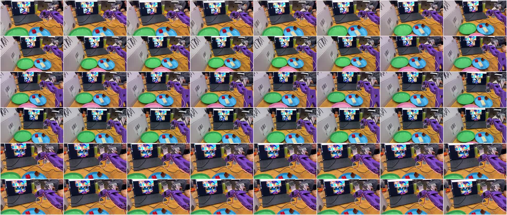

It plans, then checks itself
Each skill declares what must be true before it runs and what should be true afterwards. After every move the robot looks again. If the world disagrees with the plan, it replans or stops.
Symbolic task planning, camera-guided manipulation and learned visual inspection.
Built in 48 hours. A low-cost SO-101 arm picks a part off a tray, turns it in front of a camera, decides whether it looks right, and sorts it. It needed two real-world demonstrations, no GPU, and no defect labels.
A symbolic planner chooses each step and checks the world after every move. Geometry and two cameras guide the hand. The inspector learned “normal” from 661 clean images in under six minutes on a CPU.
1 University of Manchester
2 Royal College of Art


Quality inspection is a long chain of small steps: find the part, grasp it, show every face to a camera, judge it, put it in the right place. We built a robot that does the whole chain on its own, and that knows when it has not seen enough to decide.
Pick–inspect–sort cycles finished in one unattended run on the real arm. The tray was cleared and no part was dropped.
Real-world demonstrations. Two teleoperated runs were all the manipulation data the robot needed to pick, present and sort.
Defect labels used to fit the inspector. It learned normal appearance from 661 clean images.
Closer match between simulated and real joint motion after the arm’s response was fitted from about a minute of movement.
Each skill declares what must be true before it runs and what should be true afterwards. After every move the robot looks again. If the world disagrees with the plan, it replans or stops.
A calibrated model of the arm turns a target pose into joint angles. A camera on the wrist then nudges the gripper into line with the part before the jaws close.
A part counts as clean only when every required view has been seen and scored. A missing, stale or uncertain view withholds the sort instead of passing the part.
Our main inspiration is SymSkill (Shao et al., ICRA 2026). Its idea is to split a long task into two layers: a small set of symbols a planner can reason about, and closed-loop skills that make each symbol true. A monitor watches the symbols while the robot moves, so a failed step is caught and replanned.
SymSkill aims to be compositional like task-and-motion planning, reactive like a learned policy, and checkable at both the plan and the skill level. In its reported RoboCasa results, turning the monitor off drops success from 85% to 65%. That is why every one of our skills is followed by a check.
SymSkill invents its symbols and skills from a few minutes of play data. We had 48 hours and two demonstrations, so we wrote the symbols for this one task by hand and spent our learning budget where the task needed it: on appearance and on the arm’s dynamics.
SymSkill ICRA 2026 talk ↗| Layer | SymSkill | This work |
|---|---|---|
| Symbols | Predicates learned from play data | Hand-written for the task: part held, scan complete, part sorted |
| Skills | A learned stable motion policy per operator | Geometric skills: inverse kinematics plus wrist-camera correction |
| Monitor | Checks symbolic effects during execution and replans | Checks each skill’s expected effect before the planner advances |
| Learning | Symbols and skills | What “normal” looks like, and how the real arm responds |
Find the part, then correct the gripper’s approach as it closes in.
Pick the skill whose preconditions match what the cameras see now.
Pick, present, rotate and place, using the arm model and camera feedback.
The planner only chooses skills, and the inspector never moves the robot. That separation is what lets the same plan run on the physical arm and inside MuJoCo: only the skill executors change.
Inspection returns one of three answers: clean, anomalous or untrusted. Only trusted evidence and a completed scan can send a part to the “good” pile.
Before presenting a part, the planner confirms that it is actually held. Before sorting, it confirms that the scan is complete. A failed check triggers replanning or stops the run, so one bad grasp cannot cascade into a wrong sort.
| Skill | Expected state after execution |
|---|---|
| Pick | Part held |
| Present and rotate | Held + scan completed |
| Sort | Hand empty + sorted into selected pile |
Policies that learn manipulation end to end often need many demonstrations of every task. We gave the robot two. A person guided the arm through the task twice; the planner and the geometry did the rest. Nothing was trained on a GPU or on a large dataset.
Two leader–follower runs recorded in Physical AI Studio gave the skills their numbers: how wide to open before a grasp, how firmly to hold through the lift and spin, and the pose in which a part is shown to the camera. Because the task is split into symbols and reusable skills, those few numbers carry over to every part and every cycle.
The demonstrations set skill parameters; the skills themselves are geometric, not a learned policy.
Collecting defects is slow and they never look the same twice. So the inspector was shown only good parts. A pretrained ResNet18 turns each image into patch features, and PatchCore keeps a compact memory of them (a 5% coreset). At run time, a patch that sits far from everything in that memory raises the anomaly score.
Fit and threshold calibration: 349.56 s on four CPU threads of the Intel station.
We swept all five arm joints through about 38° each and recorded what was commanded and what the encoders measured: 1,278 samples. Masses and inertias stayed at their published CAD values; only the actuator gains and the command delay were fitted. On a separate 55-second recording the simulator’s tracking error fell from 3.02° to 0.44°.
Validation: 1,085 samples the fit never saw. Worst single-frame error 2.49°.

Every fitting image is a real camera frame of a clean part: plate-camera views and side-view crops, resized to 128 × 128. No synthetic images and no defective parts went into the reference memory.
The threshold was set on 14 clean and 12 defective images, then frozen. The final test used 16 clean and 4 defective images of parts the model had never seen. Splits are separated by object and by capture session, and duplicate images are rejected by hash, so the test cannot leak into the fit.
Each capture, fit and evaluation is logged with dataset hashes, package versions and what was not tested.
Capture provenance and validation record ↗An overhead camera finds the part and works out which way it is lying. A camera on the wrist takes over for the last few centimetres and steers the jaws into line before they close.
Depth measurements place visible surfaces in the robot’s coordinate system. Removing the table and bowls leaves candidate parts.
Iterative closest point alignment fits a box-shaped model to the measured surface points, refining the estimated position and orientation.
The wrist image shows the part between the jaws. Small position and rotation corrections align the grasp; the apparent motion between two views helps estimate height.
Calibrated camera poses place every depth measurement in the robot’s own coordinate system, so a part seen by a camera becomes a pose the arm can reach for.
Drag the slider: the right side is a handheld phone recording of the real arm, the left is MuJoCo. We recovered the camera’s position in all 979 frames from the rims of the three plates, fitted the arm’s joint motion to its outline, and replayed that motion as motor commands.
The twin is an estimate from a single camera, not an exact replay: depth along the camera’s line of sight is weakly observed, and before the lift the simulated part moves less than the real one (11.7 mm mean difference).
A plan that fails in simulation never has to fail on hardware. The same planner and skill interface drive both the real arm and the MuJoCo scene, so a new skill can be rehearsed against contact physics before it touches a part.
The scene is built from measurements: camera poses, plate positions and the robot’s CAD model, with the motor response fitted to the real arm.
Out of the box, the simulated joints were about 3° (RMS) away from the real ones. After fitting gains and command delay to 65 seconds of recorded motion, the error on a separate recording is under half a degree: 6.9 times closer. Masses and inertias were left at their published values, so the fit could not hide a wrong model behind tuned weights.
The inspector has never been shown a defect. It holds a memory of what clean surfaces look like and measures how far each new patch of image falls from it. The further away, the higher the anomaly score.
| Feature extractor | Pretrained ResNet18 |
|---|---|
| Reference bank | Clean-image patch features |
| Nearest neighbours | 3 |
| Threshold calibration | 26 validation images |
| Fit + calibration | 349.56 s on CPU |
| Deployment | OpenVINO CPU |
Anomalib 2.7.0 · PyTorch 2.10.0+cpu · OpenVINO 2026.4.1. Scores are feature-space distances, not probabilities.
Held-out image accuracy
13 / 20 correctly classified
Held-out defect recall
1 / 4 defects detected
Held-out clean specificity
12 / 16 clean images accepted
Recorded CPU prediction
One live plate-camera observation
We froze the threshold before opening the test set, then reported what came back. The model caught all 12 defects it was calibrated on and 1 of 4 on parts it had never seen. Twenty images is a small test, but the message is clear: the pipeline, export and safety gating work end to end, and the reference memory needs more varied clean captures before the detector generalises.
Image-level evaluation on the plate model; this does not measure physical sorting success.
| Actual class | Predicted clean | Predicted defective |
|---|---|---|
| Clean | 12 | 4 |
| Defective | 3 | 1 |
One photo cannot clear a part with six faces. The arm rolls the held part through seven scheduled views, and a ledger records which ones were actually seen and scored.
An invalid view, an uncertain score, a stale result or a detector fault all withhold the sort. One trusted anomaly is enough to reject a part; a clean verdict needs the whole scan.
Threshold 2.453849 · uncertainty margin ±0.002937. Calibrated for the plate camera; an independent wrist model has not been validated.
Training and evaluation record ↗Inspection runs on the Intel station’s processor, with no accelerator. The inspector is trained in PyTorch, exported to OpenVINO, and checked to give the same scores after export, to within two parts in a million.
OpenVINO CPU prediction
One recorded plate-camera frame; full-cycle throughput was not measured.| Stage | Observation | Scope |
|---|---|---|
| Anomaly inference | 26.55 ms | One live CPU prediction |
| Depth perception | 128.6 ms | One overhead cloud, 8,738 points |
| Export score difference | 1.67 × 10⁻⁶ | Maximum absolute difference on validation |
Recorded evidence: model calibration and test evaluation · deployment, perception and dynamics validation.
Everything is public, including the validation log with the results that did not go our way. Our SO-101 integration is also proposed upstream to Intel’s Physical AI Studio.